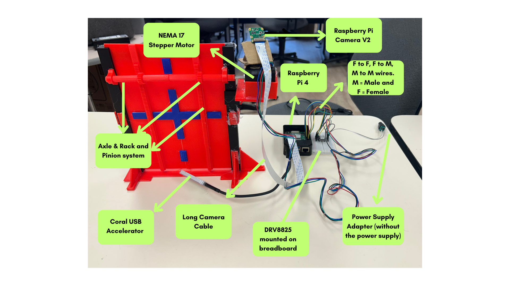
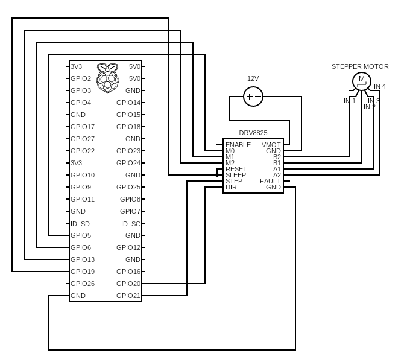
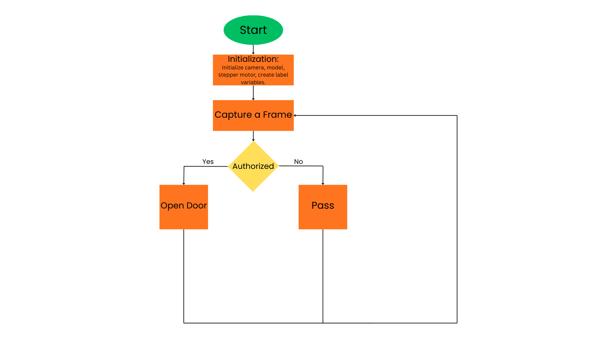

Smart Door Project Guide
Written by: Alaa Mohammad and Carter Holton
Introduction
This prototype, developed for the NSF-funded iTest SmartCT program, details a smart door that uses a machine learning model from Google Teachable Machine to grant access only to authorized users. The system uses a camera mounted on the top of the door to identify authorized individuals or pets in real-time and automatically opens up by signaling a stepper motor to lift the door.
This guide describes our specific prototype, but the concepts and steps are applicable to many custom designs.
Reference Images

Parts Used
Essentials
- CanaKit Raspberry Pi 4 (4GB) Starter PRO Kit
- Display monitor
- Wireless keyboard & mouse
- Long camera cables
- Raspberry Pi Camera Module V2
- Coral USB Accelerator
- USB Flash Drive
Hardware / Electronics
- 12V DC power supply
- Jumper wires
- Small breadboard
- NEMA 17 Stepper Motor
- DRV8825 Driver Chip
- Screwdriver
DIY / Fabrication
- Hot glue gun
- Cardboard
- Digital caliper
Physical Setup
Most of our build was 3D‑printed, but a 3D printer is not strictly required. Alternative DIY material can be used to construct the device.
The mechanical system relies on a pinion and rack movement system designed and 3D-printed in-house. This translates the rotational motion of the motor into the linear motion required to slide the door.
Main Components
Pinion and Rack Mechanism: The mechanical system relies on a pinion and rack movement system designed and 3D-printed in-house. This translates the rotational motion of the stepper motor into the linear motion required to slide the door.
The Stepper Motor: A NEMA 17 motor was chosen for its precise control. Unlike standard DC motors, a stepper motor allows the system to know exactly how far the door has moved, ensuring it opens and closes to the correct position every time.
The Camera: The Raspberry Pi V2 camera is mounted at the top of the door frame to target (human or pet) to ensure the machine learning model receives a clear, consistent live feed.
Software Setup
Follow the official Raspberry Pi documentation to install Raspberry Pi OS on your Raspberry Pi 4. Make sure to install Raspberry Pi OS Bullseye (2024-10-22) (not Bookworm or Buster). After installation, complete the standard setup process.
Required Software Versions:
- OpenCV: 4.11.0.86
- NumPy: 1.19.5
- Picamera2: 0.3.12
Installing Packages
Begin in the home directory and ensure you are in the base environment. Run the following commands exactly as shown:
# 1. Add the Coral Repo and Key echo "deb https://packages.cloud.google.com/apt coral-edgetpu-stable main" | sudo tee /etc/apt/sources.list.d/coral-edgetpu.list curl https://packages.cloud.google.com/apt/doc/apt-key.gpg | sudo apt-key add - # 2. Update and install system dependencies sudo apt-get update sudo apt-get install python3-pycoral # 3. Install Python dependencies pip3 install picamera2==0.3.12 pip3 install opencv-contrib-python==4.11.0.86 pip3 install numpy==1.19.5
Note: You may see errors regarding certain “coral cloud” packages; ignore them as long as the install completes. If you run into additional issues, consult the Teachable Sorter | Coral documentation.
Verify Installation
To check that your library versions are correctly installed, run the following commands in the terminal:
python3 -c "import cv2, numpy; print(f'OpenCV: {cv2.__version__}\nNumPy: {numpy.__version__}')"
apt policy python3-picamera2
Note: If your downloads still fail, ensure you're connected and that your time and date settings are up to date.
Camera Setup and Calibration
The Raspberry Pi Camera V2 is used in this project. For reliable performance, ensure:
- Adequate lighting is present
- The camera is at least 2 inches away from the object
- The camera is mounted securely with no movement
Connecting and Focusing
Connect the camera to the Raspberry Pi using the white ribbon cable. Always power off the Raspberry Pi before connecting or disconnecting the camera.
Included with your camera is a white circular focusing tool. Place the narrow end over the lens of the camera and twist until your image is sharp.
Camera Settings
The camera uses auto‑exposure, which may cause overexposed images in low‑light or enclosed environments. To resolve this, you can manually set exposure and gain values in your code to achieve consistent, correctly exposed images. You can view the exposure and gain values we set in our code at the top of the main file.
Creating a Model
Once your physical setup is complete, manually place objects in front of the door camera to collect training images. Run the script training.py and follow the instructions displayed in the terminal. Be sure to collect images of all objects as well as background images with no objects present. Transfer these images to a device where you can access the internet.
Training the Model
- Go to teachablemachine.withgoogle.com and create an Image Project.
- Create 3 classes with your own labels and remember to change the label variables in code.
- Upload your samples to each class and click "Train Model."
- Test the model’s accuracy using the preview panel.
Exporting the Model
- Click "Export Model" and select the "TensorFlow Lite" tab.
- Choose EdgeTPU as the model conversion type and click "Download my model."
- Transfer the resulting .zip file to your Raspberry Pi via a USB flash drive or cloud storage.
- Unzip your zip file in model_files after you've finished downloading your code from github in the Running Code section.
Retraining Tips
- Add more high‑quality sample images showing multiple angles of each object.
- Review existing images and remove blurry or low‑quality frames.
- Increase the number of training epochs using the Advanced dropdown on the Teachable Machine website and retrain the model.
Tip: For our demonstration, we used different plush toys to represent "Authorized" and "Unauthorized" pets to verify the system's accuracy.
Hardware Setup
To fully operate the project, all hardware components must be correctly wired and powered. Refer to the figure below for the overall diagram for all components:

Breadboard Overview
All electrical connections are made on a breadboard. If you are unfamiliar with breadboards, watch the following overview video:
Power Supply to Stepper Motor Driver Chip
Connect the 12V power supply to the breadboard and then form a connection to the VMOT and GND pins on the DRV8825. Always check the labels on the components before making connections.
Stepper Motor Driver Chip to Stepper Motor
Connect the A1, A2, B1, and B2 pins to the Stepper motor inputs. A1 and A2 pins must connect to the same coil as do B1 and B2. To check which 2 pins correspond to the same coil, you can use a multimeter to check for continuity. If that's not available, you can keep trying different variations until the motor spins normally. It is common for pins of the same coil to be right next to one another, but that's not always the case. If the stepper motor vibrates but doesn't spin when connected, then your connections are wrong. If the stepper motor appears to turn the wrong way, you can either flip your connections or change your code to accomodate for that.
Running Code
Download the code repository from GitHub, which should contain 2 folders:
- The folder named "main" will be the directory for your main sorting program. It contains main.py, module files, and a folder containing the model files we created for our prototype. Remember to replace the files in the model_files folder with the files you've created for your model.
- The folder named "training" will contain a single training script that you can run to collect training images as discussed previously.
Logic Flowchart
The following flowchart illustrates the logical sequence the sorting program follows, from image capture to motor actuation:

You may need to alter values in code such as degree of movement, class names, and exposure, so that the program is geared towards your class names and build.
More: If you’re feeling confident in tackling this project, it is also possible to alter the code to include sorting for multiple classes.